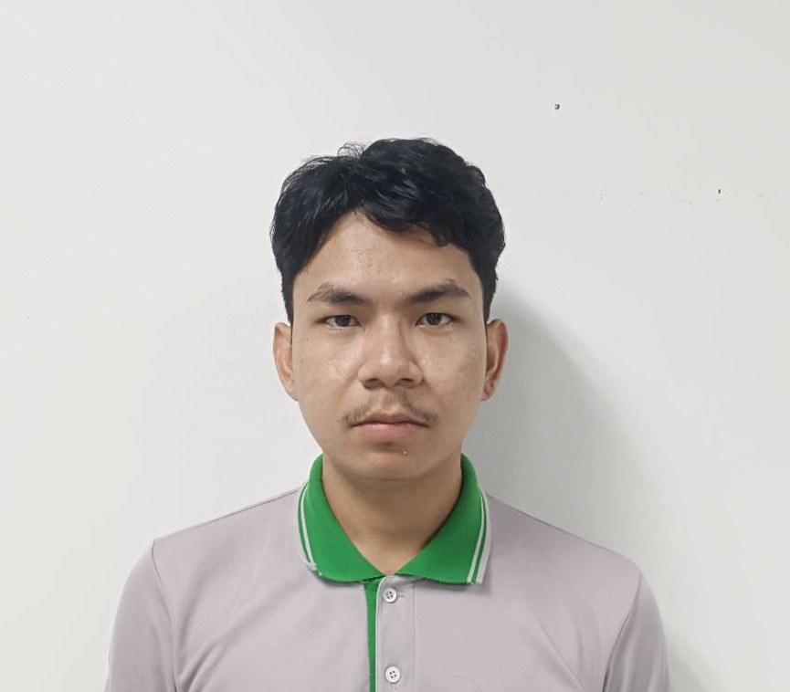

นาย ชยากร ฟองสมุทรMr. Chayakorn Fongsamut
พร้อมที่จะเรียนรู้งานใหม่ Ready to Learn New Things
สวัสดีครับ ผมชื่อ นาย ชยากร ฟองสมุทร ช่างเทคนิคที่มีประสบการณ์ในด้านระบบรักษาความปลอดภัย (CCTV), ระบบควบคุมการเข้า-ออก (Access Control), ระบบเครือข่าย Server และงานไฟฟ้า มีความสามารถในการติดตั้ง ดูแล และซ่อมบำรุงระบบเทคโนโลยีที่เกี่ยวข้อง พร้อมให้บริการแก้ไขปัญหาภาค สนามและสนับสนุนลูกค้าอย่างมีประสิทธิภาพ ใส่ใจในรายละเอียด ทำงานได้ดีทั้งภายใต้แรงกดดันและในทีม พร้อมที่จะเรียนรู้และพัฒนาทักษะใหม่ ๆ อยู่เสมอ
Hi, I'm Chayakorn Fongsamut — An experienced technician specializing in CCTV, Access Control, Server Networks, and Electrical Systems. Proven expertise in installation, maintenance, and troubleshooting of integrated technology systems. Committed to providing high-quality on-site support and efficient customer service. Highly detail-oriented and thrives in high-pressure team environments, with a strong drive for continuous learning and professional development.
ปัจจุบันทำงานที่จังหวัดพระนครศรีอยุธยา อ.วังน้อย และพร้อมร่วมงานกับทีมใหม่และมุ่งมั่นพัฒนาตัวเอง
Currently based in Wang Noi, Ayutthaya, I am eager to join a new team and am deeply committed to continuous professional development.
ปริญญาตรี วิศวะกรรมไฟฟ้าB.Sc. Electrical Engineering
ประกาศนียบัตรวิชาชีพชั้นสูงHigher Vocational Certificate
ประกาศนียบัตรวิชาชีพVocational Certificate
Sun-moon communications and engineering Co., Ltd.Sun-moon communications and engineering Co., Ltd.
— บริหารจัดการงาน Corrective Maintenance (CM) วิเคราะห์ปัญหา และกำหนดแนวทางแก้ไขอย่างเป็นระบบ
— จัดทำ Checklist ตรวจสอบระบบ
— จัดทำ รายงานและเล่มส่งมอบงานประจำเดือน
— เข้าร่วมและดำเนินการ ประชุมส่งมอบงานกับลูกค้า อธิบายปัญหา แนวทางแก้ไข และแผนงานถัดไป
— วิเคราะห์ปัญหาเชิงเทคนิค และเสนอ แนวทางแก้ไขระยะสั้น–ระยะยาว
— จัดทำ Scope of Work (SOW) สำหรับงานจัดซื้อและงานปรับปรุงระบบ — Strategic Asset Management: Executed monthly PM schedules for large-scale CCTV & Access Control, achieving 99.9% system uptime and extending equipment lifespan.
— Root Cause Analysis: Led Corrective Maintenance (CM) by using data-driven failure analysis to eliminate recurring technical glitches and stabilize system performance.
— Standardization & Compliance: Designed high-precision inspection checklists and performance reports, ensuring 100% compliance with international security standards.
— Stakeholder Engagement: Facilitated monthly handover meetings to present system health analytics and secure approval for strategic future action plans.
— System Optimization: Engineered short-term fixes and long-term enhancements for complex system failures, significantly improving security reliability.
— Technical Procurement: Authored detailed Scopes of Work (SOW) for system upgrades, effectively aligning technical requirements with budgetary goals.
นวคุณซิมเท็ม.จำกัดNavakun system Co.,Ltd.
— ให้บริการซ่อมบำรุงระบบไฟฟ้าและ IT แก้ไขปัญหาและสนับสนุนลูกค้า — Directed the installation and maintenance of integrated CCTV, Access Control, and Wireless Access Point (WAP) systems.
— Ensured high-level data security and seamless network connectivity for diverse client infrastructures.
บริษัท เค ที ที แมชชีนเนอรี่ จำกัดKTT Machineery Co., Ltd.
Hantara Subdistrict,
Ayutthaya ,
Ayutthaya13000